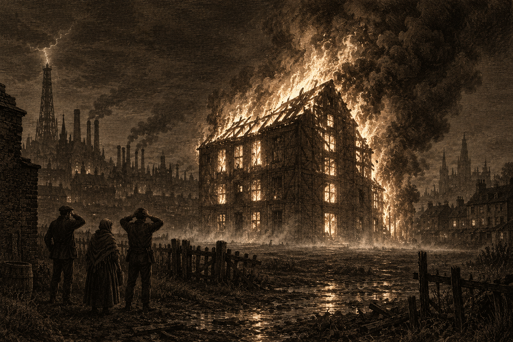

The Valchek warehouse, Charhollow, the night of the 30th, as sketched by our artist from across the yard.
Shortly after the second bell on the night of the 30th, a warehouse in Charhollow belonging to House Valchek was found to be on fire. Nobody tried to put it out. By dawn the building had burned to its timbers, and at least three people had seen a ghost.
House Valchek is not a name that sells newspapers. It is among the smallest of the Brightstone houses, and its fortune, such as remains, is paper: deeds, leases, charters, the documents other families have long forgotten they signed. The Charhollow warehouse, which stands alone across a yard from the nearest tenements, is where that paper is kept. The neighbors call it “the dullest building in the district.” They have had cause this week to revise that view. Asked why no bucket line formed, one shrugged: “It’s not ours, is it? And it’s not near anything.”
The accounts of the night agree on little. A foundry hand walking home from the late shift saw lamps moving inside the building after the night watchman had gone. A second man, who would give his name only as Oskar, saw “several people, maybe four, maybe six” leave by the back lane “in no great hurry.” The fire was seen a short while later. Nobody saw it start.
Then there is the ghost. No two witnesses describe it alike: a shape in the smoke that moved against the wind; a figure crossing the yard “like it didn’t see us”; a cold that settled over the yard while the building burned. A woman who watched from the tenement opposite until dawn put it plainly. “It was cold. In a fire. It was cold.” The Spirit Wardens arrived before first light, and the yard has been closed since.
House Valchek has issued a statement: the fire was “an unfortunate accident,” the damage is “regrettable but contained,” and “nothing of value was taken.” Lord Edric Valchek could not be reached.
The house’s claim on its insurance has fared worse than the building. Its policy, this paper understands, covers loss by arson and covers loss by spiritual event, but not by both at once. The underwriters maintain that the night of the 30th was both, and have declined to pay. The house is contesting. Its Factor, Miss Marla Vale, has been seen at the underwriters’ offices daily since, and at the clerk’s, and at the yard. Asked whether the fire was an accident, she gave the house’s answer. Asked whether she believed it, she said only: “Things don’t add up.”
This paper has lately been asked to keep its speculations to itself, and will. We offer instead a fact. Any loss from a bonded warehouse must be filed with the City clerk, and House Valchek has filed one. It lists a single item: “one fragment of an old transit charter. Value: nominal.” The clerk could not say what line the charter belonged to, only that it was not one that has run in his lifetime.
A Question for the House
If nothing of value was taken, we wonder why it was reported. If something was, we wonder who knew it was there.
Mr. Dalmorrian at the oche, as sketched on a napkin by a patron and improved by our artist.
It has been a quiet week in Brightstone, and this correspondent was obliged to go looking. He found Mr. Jared Dalmorrian at the Lamp & Anchor on the docks on the evening of the 29th, winning a darts tournament.
Mr. Dalmorrian’s family is usually at some pains to keep him out of these pages, and readers with long memories will know why. On this occasion the family was not consulted. He entered under the name “Jerry,” was given no chance by the dockhands who play nightly, and beat every one of them. His final dart, a double top, was met by a silence, then a roar, and he was lifted onto a table.
From the table, he bought the house a round, then a second, then a third “for the losers, who are the true winners.” He then made a speech. He dedicated the cup to “my favorite nephew, Alaric, and his eccentric friends,” and announced that the winnings would go to promoting their goat-cart delivery concern, “the finest in the city, ask anyone, ask the goats.” He challenged the landlord’s mounted eel to a rematch, and lost. He was seen into a hired cab shortly before the fourth bell with the cup in his arms. His coat is behind the bar.
Asked for a comment on his father’s evening, Mr. Harker Dalmorrian, who manages the family warehouse, said: “Piss off.”